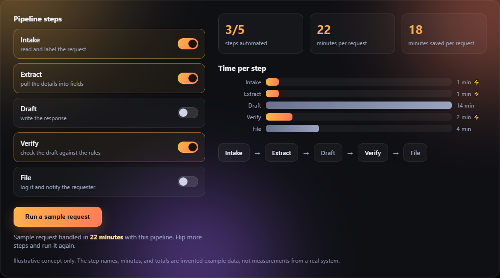

Build the pipeline. Watch the hours fall off.
A design concept for a workflow-automation studio: switch steps of a back-office process between manual and automated, and see the cost of the process change in front of you.
Try it: automate a request pipeline
This one is interactive. Flip any step from manual to automated and the time chart reflows. Then run a sample request through the pipeline you built. All numbers are illustrative dummy data for a made-up process.
The concept, captured
A still of the builder above, mid-session, with three of the five steps switched to automated.

A real screenshot of this page's interactive builder, not a mockup image.
What this concept explores
Composable steps
A process is a row of small, swappable steps, and any one of them can move from a person to software without rebuilding the rest.
Cost you can see
Every configuration shows its price in minutes immediately, so the case for automating a step is visible before anything gets built.
Direct manipulation
The interface is the model: flip a switch, watch the pipeline change. No settings page, no report to request.
Humans stay in the loop
Steps that need judgment stay manual on purpose, and the pipeline runs fine with a person in the middle of it.
A concept, not a claim
This page is a design exploration of a workflow-automation studio. For real, shipped systems with measured outcomes, see the projects page.
View real projects →